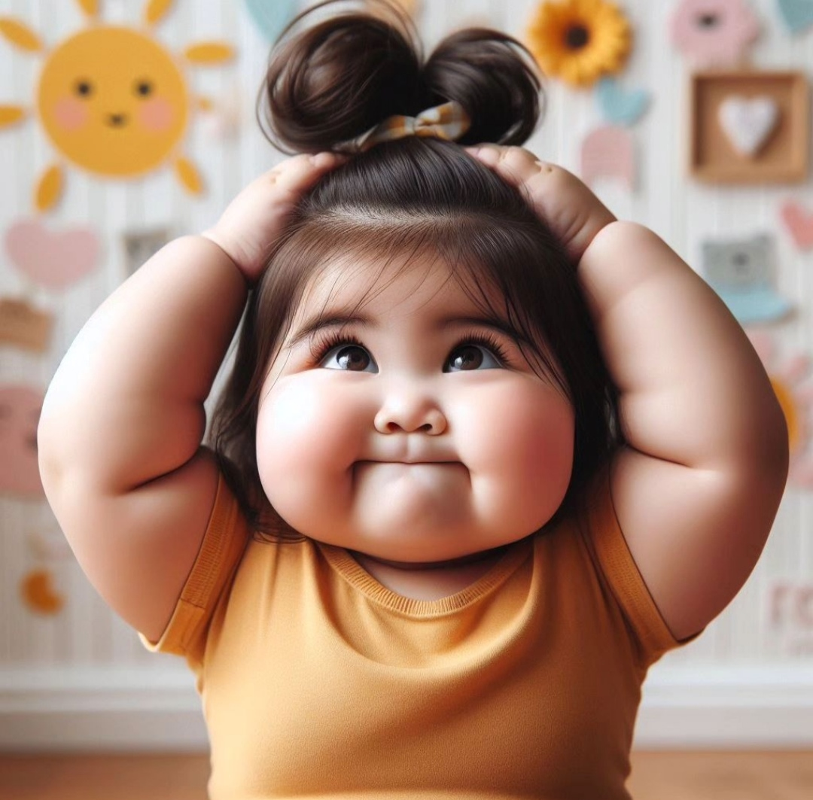
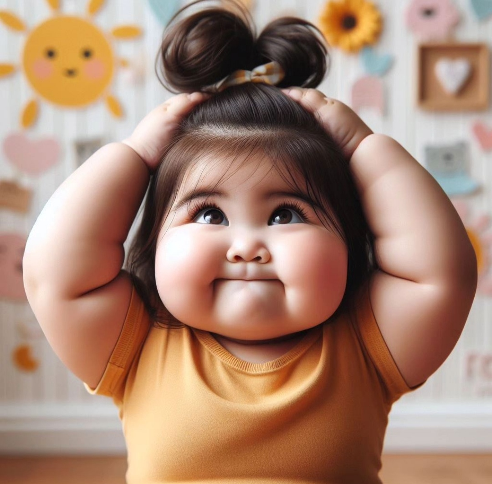

Ellos son un regalo precioso que deben ser cuidado como el mayor tesoro de la humanidad, porque de esta generación dependen grandes cambios. Si los niños son el futuro del mundo, la sociedad adulta son los responsables de sembrar en ellos las semillas apropiadas de amor, respeto, educación, tolerancia y demás valores.
¿Por qué los niños son importantes? Las niñas y los niños son seres únicos que desde su nacimiento, experimentan un proceso de descubrimiento de sus capacidades y potencialidades que les permite actuar en la vida. Son seres sociales pues forman parte de una familia y se desarrollan en un determinado contexto social y cultural.
¿Qué importancia tiene el niño? Favorece el desarrollo de la inteligencia, pues lleva al niño a explorar el mundo que lo rodea para conocerlo mejor. Favorece el desarrollo emocional, pues el niño expresa sus sentimientos y a veces resuelve conflictos emocionales.


El niño usa expresiones de la cara y sonidos para que se satisfagan sus necesidades, por ej., llora, sonría, mira fijamente a algo, arrulla. Expresa sentimientos con sonidos y gestos, por ej., da chillidos, se ríe, bate las palmas.
¿Cómo se expresa un niño? Se comunica usando gestos, como por ejemplo manoteando o levantando los brazos. Imita diferentes sonidos del habla. Para el primer año, dice una o dos palabras (“mamá”, “papá”, “no” y “adiós”).
¿Cómo podemos identificar las emociones para niños? Pasos a seguir para identificar una emoción: Ser conscientes de que esa emoción está dentro de nosotros. Ponerle nombre: qué es lo que siento, cómo se llama lo que siento… Buscar el origen de esa emoción qué es lo que he hecho para que yo me sienta así.